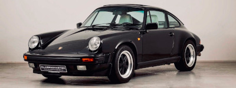
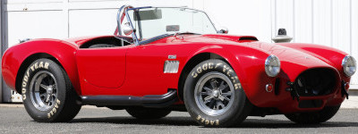

En 1969 FERRARI présenta la DINO 246 GT. Mais cette dernière ne portera jamais l'écusson FERRARI car pour Enzo elle était trop
novatrice. Son moteur était en position centrale arrière, et était un V6, rédhibitoire pour un cheval cabré de route à l'époque.

En 1963 PORSCHE présenta la 901, mais PEUGEOT avait déposé les noms de véhicules avec un zéro au milieu (initialement pour la manivelle).
Afin d'éviter de raviver des tensions franco-allemandes, PORSCHE renomma son modèle qui deviendra une légende, la 911 !

En 1962, le texan Carroll SHELBY, avec l'appui de FORD, présenta celle qui devait devenir la nouvelle reine des courses d'endurance
en détronant les intouchables FERRARI. L'idée, un petit cabriolet anglais associé à un gros V8 americain, la Cobra était née.
Combien d'exemplaires de la FERRARI F40 ont été produits ? :
Sur les 90 éditions des 24h du Mans, quelle marque automobile est la plus titrée ? :
La LOTUS ESPRIT S1 de James BOND dans "L'espion qui m'aimait" avait quel type de moteur ? :